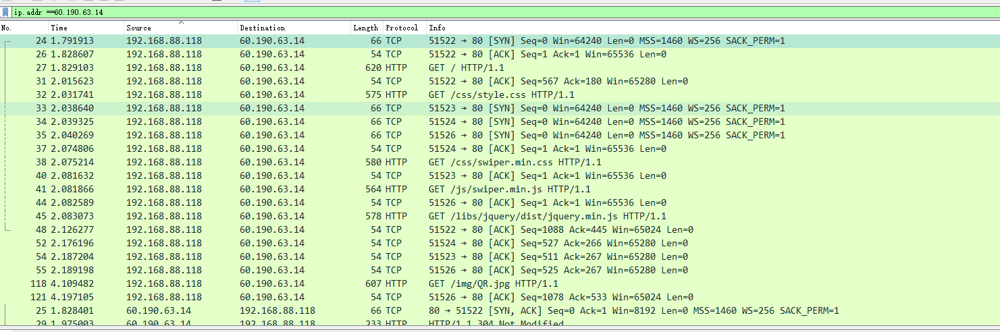
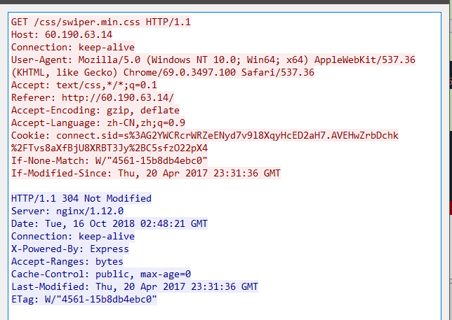
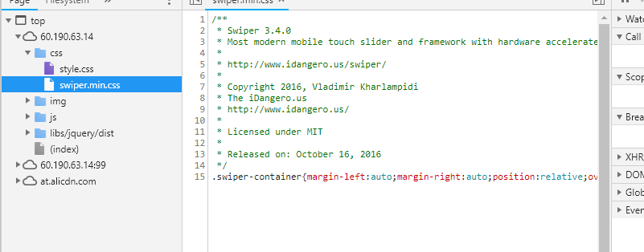
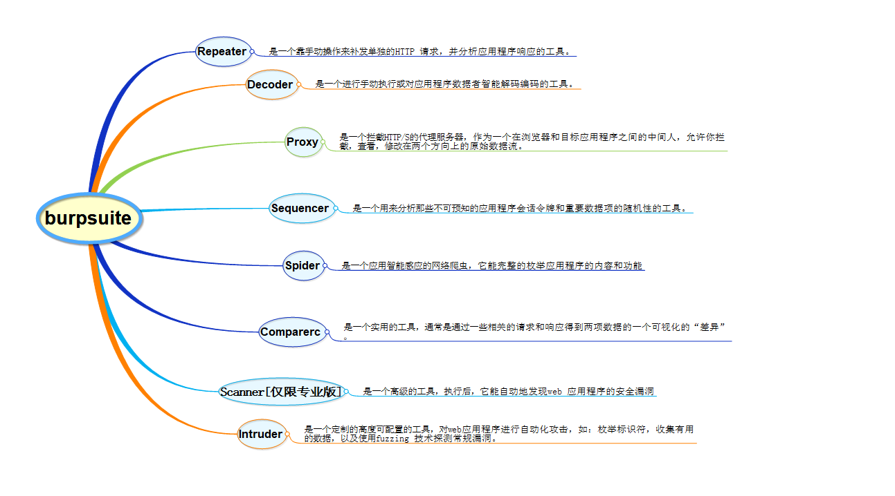
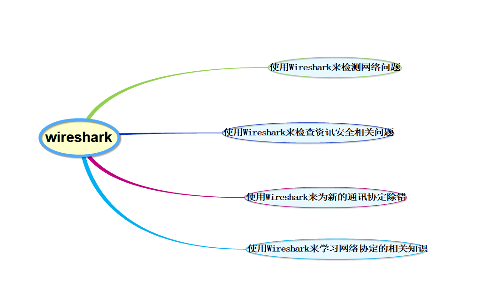
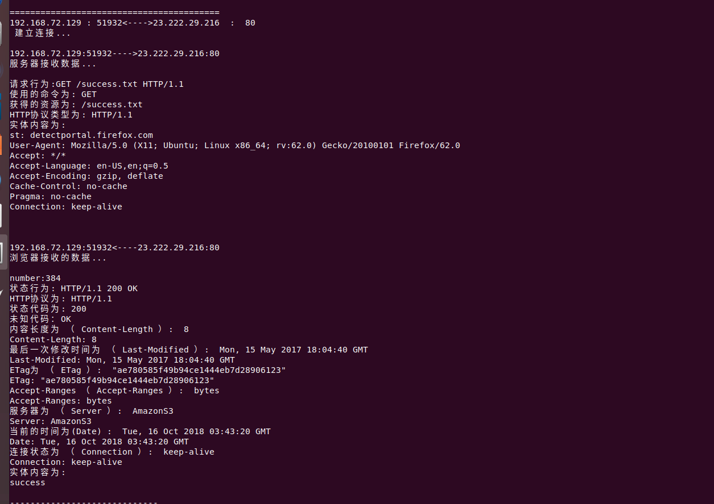

本报告主要是存档关于QT编写的流量包抓取代码。
实验工具
Burpsuite：BurpSuite 是用于攻击web 应用程序的集成平台，包含了许多工具。Burp Suite为这些工具设计了许多接口，以加快攻击应用程序的过程。所有工具都共享一个请求，并能处理对应的HTTP 消息、持久性、认证、代理、日志、警报。
Wireshark：（前称Ethereal）是一个网络封包分析软件。网络封包分析软件的功能是撷取网络封包，并尽可能显示出最为详细的网络封包资料。Wireshark使用WinPCAP作为接口，直接与网卡进行数据报文交换。
在过去，网络封包分析软件是非常昂贵的，或是专门属于盈利用的软件。Ethereal的出现改变了这一切。在GNUGPL通用许可证的保障范围底下，使用者可以以免费的代价取得软件与其源代码，并拥有针对其源代码修改及客制化的权利。Ethereal是全世界最广泛的网络封包分析软件之一。
实验目的
1.对web服务器访问并抓取流量
2.图片解释BurpSuite和wireshark区别
3.在QT中编写抓取http包程序
实验环境
操作机：Kali Linux
IP：118.112.95.***
目标IP：60.190.63.14
实验步骤
抓包测试
因为手里刚好有最近扫出来的一个IP，可以用来配合做实验，就不再使用虚拟机搭建服务器，直接用现成IP实验抓包。
打开wireshark，抓取该IP的数据包。获得很多。可以看出，三次握手之后本机IP向目标IP发送了get请求，然后目的IP发送了数据包（包含网页信息）给本机IP。浏览器再将其打开。

我们可以由此看到可以看到抓取到的包和网页元素相对应。


Burpsuite和Wireshark的区别


编写HTTP抓取程序
代码太长，点击展开
1
2
3
4
5
6
7
8
9
10
11
12
13
14
15
16
17
18
19
20
21
22
23
24
25
26
27
28
29
30
31
32
33
34
35
36
37
38
39
40
41
42
43
44
45
46
47
48
49
50
51
52
53
54
55
56
57
58
59
60
61
62
63
64
65
66
67
68
69
70
71
72
73
74
75
76
77
78
79
80
81
82
83
84
85
86
87
88
89
90
91
92
93
94
95
96
97
98
99
100
101
102
103
104
105
106
107
108
109
110
111
112
113
114
115
116
117
118
119
120
121
122
123
124
125
126
127
128
129
130
131
132
133
134
135
136
137
138
139
140
141
142
143
144
145
146
147
148
149
150
151
152
153
154
155
156
157
158
159
160
161
162
163
164
165
166
167
168
169
170
171
172
173
174
175
176
177
178
179
180
181
182
183
184
185
186
187
188
189
190
191
192
193
194
195
196
197
198
199
200
201
202
203
204
205
206
207
208
209
210
211
212
213
214
215
216
217
218
219
220
221
222
223
224
225
226
227
228
229
230
231
232
233
234
235
236
237
238
239
240
241
242
243
244
245
246
247
248
249
250
251
252
253
254
255
256
257
258
259
260
261
262
263
264
265
266
267
268
269
270
271
272
273
274
275
276
277
278
279
280
281
282
283
284
285
286
287
288
289
290
291
292
293
294
295
296
297
298
299
300
301
302
303
304
305
306
307
308
309
310
311
312
313
314
315
316
317
318
319
320
321
322
323
324
325
326
327
328
329
330
331
332
333
334
335
336
337
338
339
340
341
342
343
344
345
346
347
348
349
350
351
# include <sys/socket.h>
# include <netinet/in.h>
# include <arpa/inet.h>
# include "nids.h"
char ascii_string[10000];
char *char_to_ascii(char ch)
/*此函数功能主要用于把协议数据进行显示*/
{
char *string;
ascii_string[0] = 0;
string = ascii_string;
/*打印字符*/
if(isgraph(ch))
{
*string++ = ch;
}
/*打印空格*/
else if (ch == '.')
{
*string++ == ch;
}
/*打印回车和换行*/
else if (ch == '\n' || ch == '\r')
{
*string++ = ch;
}
/*打印其他字符，以.显示*/
else
{
*string++ = '.';
}
*string = 0;
return ascii_string;
}
void parse_client_data(char content[], int number)
{
char temp[1024];
char str1[1024];//http协议
char str2[1024];//状态码显示
char str3[1024];//未知代码
unsigned int i;
unsigned int k=0;
unsigned int j;
char entity_content[1024];
if(content[0] != 'H' && content[1] != 'T' && content[2] != 'T' && content[3] != 'P')
{
printf("实体内容为（续）: \n");
for (i = 0; i < number; i++)
{
printf("%s", char_to_ascii(content[i]));
}
printf("\n");
}
else
{
printf("number:%d\n",number);
for (i = 0; i < strlen(content); i++)
{
if (content[i] != '\n')
{
k++;
continue;
}
for (j = 0; j < k; j++)
{
temp[j] = content[j + i - k];
}
temp[j] = '\0';
if (strstr(temp, "HTTP"))
{
printf("状态行为: ");
printf("%s\n",temp);
sscanf(temp, "%s %s %s", str1, str2,str3);
printf("HTTP协议为: %s\n", str1);
printf("状态代码为: %s\n", str2);
printf("未知代码：%s\n",str3);
}
if (strstr(temp, "Date"))
{
printf("当前的时间为(Date) : %s\n", temp + strlen("Date:"));
printf("%s\n", temp);
}
if (strstr(temp, "Server"))
{
printf("服务器为 （ Server ）: %s\n", temp + strlen("Server:"));
printf("%s\n", temp);
}
if (strstr(temp, "CaChe-Control"))
{
printf("缓存机制为 （ CaChe-Control ）: %s\n", temp + strlen("CaChe-Control:"));
printf("%s\n", temp);
}
if (strstr(temp, "Expires"))
{
printf("资源期限为 （ Expires ）: %s\n", temp + strlen("Erpires:"));
printf("%s\n", temp);
}
if (strstr(temp, "Last-Modified"))
{
printf("最后一次修改时间为 （ Last-Modified ）: %s\n", temp + strlen("Last-Modified:"));
printf("%s\n", temp);
}
if (strstr(temp, "ETag"))
{
printf("ETag为 （ ETag ）: %s\n", temp + strlen("ETag:"));
printf("%s\n", temp);
}
if (strstr(temp, "Accept-Ranges"))
{
printf("Accept-Ranges （ Accept-Ranges ）: %s\n", temp + strlen("Accept-Ranges:"));
printf("%s\n", temp);
}
if (strstr(temp, "Content-Length"))
{
printf("内容长度为 （ Content-Length ）: %s\n", temp + strlen("Content-Length:"));
printf("%s\n", temp);
}
if (strstr(temp, "Connection"))
{
printf("连接状态为 （ Connection ）: %s\n", temp + strlen("Connection:"));
printf("%s\n", temp);
}
if (strstr(temp, "Connent-Type"))
{
printf("内容类型为 （ Content-Type ）: %s\n", temp + strlen("Content-Type:"));
printf("%s\n", temp);
}
/*获取实体内容*/
if ((content[i] == '\n') && (content[i + 1] == '\r'))
{
if (i + 3 == strlen(content))
{
printf("无实体内容\n");
break;
}
for (j = 0; j < number - i - 3; j++)
entity_content[j] = content[i + 3 + j];
entity_content[j] = '\0';
printf("实体内容为: \n");
for (i = 0; i < j; i++)
{
printf("%s", char_to_ascii(entity_content[i]));
}
printf("\n");
break;
}
k = 0;
}
}
}
void parse_server_data(char content[], int number)
{
char temp[1024];
char str1[1024];
char str2[1024];
char str3[1024];
unsigned int i;
unsigned int k=0;
unsigned int j;
char entity_content[1024];
for (i = 0; i < strlen(content); i++)
{
if (content[i] != '\n')
{
k++;
continue;
}
for(j = 0; j < k; j++)
temp[j] = content[j + i - k];
temp[j]='\0';
if (strstr(temp, "GET"))
{
printf("请求行为:");
printf("%s\n", temp);
sscanf(temp, "%s %s %s", str1, str2, str3);
printf("使用的命令为: %s\n", str1);
printf("获得的资源为: %s\n", str2);
printf("HTTP协议类型为: %s\n", str3);
}
if (strstr(temp, "Accept:"))
{
printf("接受的文件包括 ( Accpet: ) :%s\n", temp + strlen("Accept:"));
printf("%s\n", temp);
}
if (strstr(temp, "Referer"))
{
printf("转移地址为 ( Referer ) :%s\n", temp + strlen("Referer:"));
printf("%s\n", temp);
}
if (strstr(temp, "Accept-Language"))
{
printf("使用的语言为 ( Accept-Language ) :%s\n", temp + strlen("Accept-Language:"));
printf("%s\n", temp);
}
if (strstr(temp, "Accept-Encoding"))
{
printf("接收的编码方式为 ( Accept-Encoding ) :%s\n", temp + strlen("Accept-Encoding:"));
printf("%s\n", temp);
}
if (strstr(temp, "If-Modified-Since"))
{
printf("上次修改的时间为 ( If-Modified-Since ) :%s\n", temp + strlen("If-Modified-Since:"));
printf("%s\n", temp);
}
if (strstr(temp, "If-None-Match"))
{
printf("If-None-Match 为 ( If-None-Match ) :%s\n", temp + strlen("Id-None-Match:"));
printf("%s\n", temp);
}
if (strstr(temp, "User-Agent"))
{
printf("用户的浏览信息为 ( User-Agent ) :%s\n", temp + strlen("User-Agent:"));
printf("%s\n", temp);
}
if (strstr(temp, "Host"))
{
printf("访问的主机为 ( Host ) :%s\n", temp + strlen("Host:"));
printf("%s\n", temp);
}
if (strstr(temp, "Connection"))
{
printf("连接状态为 ( Connection ) :%s\n", temp + strlen("Connection:"));
printf("%s\n", temp);
}
if (strstr(temp, "Cookie"))
{
printf("Cookie 为 ( Cookie ) :%s\n", temp + strlen("Cookie:"));
printf("%s\n", temp);
}
if((content[i] == '\n') && (content[i + 1] = '\r') && (content[i + 2] = '\n'))
{
if (i + 3 == strlen(content))
{
printf("无实体内容 \n");
break;
}
for (j = 0; j < strlen(content) - i - 3; j++)
entity_content[j] = content[i + 3 + j];
entity_content[j] = '\0';
printf("实体内容为: \n");
printf("%s", entity_content);
printf("\n");
break;
}
k = 0;
}
}
void http_protocol_callback(struct tcp_stream *tcp_http_connection, void **param)
{
char address_content[1024];
char content[65535];
//char content_urgent[65535];
struct tuple4 ip_and_port = tcp_http_connection->addr;
strcpy(address_content, inet_ntoa(*((struct in_addr*) & (ip_and_port.saddr))));
sprintf(address_content + strlen(address_content), " : %i", ip_and_port.source);
strcat(address_content, "<---->");
strcat(address_content, inet_ntoa(*((struct in_addr*) & (ip_and_port.daddr))));
sprintf(address_content + strlen(address_content), " : %i", ip_and_port.dest);
strcat(address_content, "\n");
if(tcp_http_connection->nids_state == NIDS_JUST_EST)
{
if (tcp_http_connection->addr.dest !=80)
{
return ;
}
tcp_http_connection->client.collect++;
tcp_http_connection->server.collect++;
printf("\n\n\n=========================================\n");
printf("%s 建立连接...\n",address_content);
return ;
}
if(tcp_http_connection->nids_state == NIDS_CLOSE)
{
printf("-----------------------------\n");
printf("%s正常关闭...\n",address_content);
return ;
}
if (tcp_http_connection->nids_state == NIDS_RESET)
{
printf("-----------------------------\n");
printf("%s连接被RST关闭..\n", address_content);
return ;
}
if (tcp_http_connection->nids_state == NIDS_DATA)
{
struct half_stream *hlf;
if (tcp_http_connection->client.count_new)
{
hlf = &tcp_http_connection->client;
strcpy(address_content, inet_ntoa(*((struct in_addr*)&(ip_and_port.saddr))));
sprintf(address_content + strlen(address_content), ":%i", ip_and_port.source);
strcat(address_content, "<----");
strcat(address_content, inet_ntoa(*((struct in_addr*)&(ip_and_port.daddr))));
sprintf(address_content + strlen(address_content), ":%i", ip_and_port.dest);
strcat(address_content, "\n");
printf("\n");
printf("%s", address_content);
printf("浏览器接收的数据...\n");
printf("\n");
memcpy(content, hlf->data, hlf->count_new);
content[hlf->count_new] = '\0';
parse_client_data(content, hlf->count_new);
}
else
{
hlf = &tcp_http_connection->server;
strcpy(address_content, inet_ntoa(*((struct in_addr*) & (ip_and_port.saddr))));
sprintf(address_content + strlen(address_content), ":%i", ip_and_port.source);
strcat(address_content, "---->");
strcat(address_content, inet_ntoa(*((struct in_addr*) & (ip_and_port.daddr))));
sprintf(address_content + strlen(address_content), ":%i", ip_and_port.dest);
strcat(address_content, "\n");
printf("\n");
printf("%s", address_content);
printf("服务器接收数据...\n");
printf("\n");
memcpy(content, hlf->data, hlf->count_new);
content[hlf->count_new] = '\0';
parse_server_data(content, hlf->count_new);
}
}
return ;
}
int main(void)
{
struct nids_chksum_ctl tmp;
//关闭校验和
tmp.netaddr = 0;
tmp.mask = 0;
tmp.action = 1;
nids_register_chksum_ctl(&tmp, 1);
printf("nids_chksum_ctl:%d\n",tmp.action);
if (!nids_init())
{
printf("出现错误: %s\n", nids_errbuf);
exit(1);
}
nids_register_tcp(http_protocol_callback);
nids_run();
return 0;
}
效果展示
